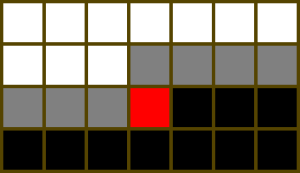
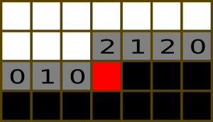
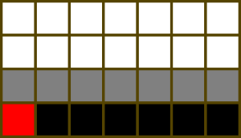
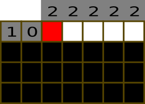
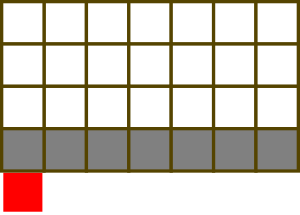

SRM 532 attracted 830 Div 1 participants and 1361 Div 2 participants for a total of 2191 coders that showed off their wits in an algorithm match.
In division 1, the match presented three interesting problems to solve, with one tricky problem that only less than half of the coders solved. In the end, only 5 coders solved all problems correctly. The first place went to RAD. thanks for his additional +50 challenge points. dolphinigle took the second place, however, he should have been the match winner if he had not unsuccessfully challenged a solution in the last seconds. dzhulgakov grabbed the third place with stable performance in each problems and additional +100 challenge points.
In division 2, only csferng solved all problems correctly and thus became the match winner. The second and third place went to akm1489 and MDG.CEO, respectively. Erop, the fastest D2-Hard solver (with unfortunately challenged D2-Medium), finished in the 6th place.
I would like to thank [[rng_58]], mystic_tc, and misof for helping me prepare the match.
Value 250 Submission Rate 1178 / 1239 (95.08%) Success Rate 1147 / 1178 (97.37%) High Score jg_1992 for 249.93 points (0 mins 28 secs) Average Score 222.71 (for 1147 correct submissions)
Optimal values for A and B
As the problem statement says, the numbers A and B, i.e., the lowest and highest duck numbers in the kingdom, are unknown to us. So, let's try to determine them from ducks. There are two obvious observations: A must be less than or equal to the smallest number in ducks and B must be greater than or equal to the largest number in ducks. What are their values such that the number of ducks that Mr. Dengklek forgot to call is minimum? It can be proved that in an optimal solution,
* A is equal to the smallest number in ducks.
* B is equal to the largest number in ducks.
Proof: In the proposed solution above, duck numbered A was called by Mr. Dengklek because it is present in ducks. Now, suppose that A is less than the smallest number in ducks. Because A is not present in ducks, then in this solution the number of ducks that were not called is at least one larger than that in the proposed solution. The case with B being larger than the largest number in ducks is handled in a similar way. Therefore, the proposed solution must be optimal.
Conclusion
So we know the values of A and B. There are B-A+1 ducks in the kingdom. Because ducks does not contain duplicate elements, the number of ducks that Mr. Dengklek called is equal to the number of elements of ducks. Therefore, the number of ducks that Mr. Dengklek did not call is (B-A+1) - (number of elements of ducks).
Code
To get the smallest and largest number in ducks, we can sort it and retrieve its first and last element, to produce this short code.
public class DengklekTryingToSleep
{
public int minDucks(int[] ducks)
{
Arrays.sort(ducks);
return (ducks[ducks.length-1] - ducks[0] + 1) - ducks.length;
}
}
DengklekMakingChains
Used as: Division One - Level One:
Value 600 Submission Rate 687 / 1239 (55.45%) Success Rate 106 / 687 (15.43%) High Score akm1489 for 595.07 points (2 mins 35 secs) Average Score 292.88 (for 106 correct submissions)
Value 300 Submission Rate 721 / 756 (95.37%) Success Rate 317 / 721 (43.97%) High Score dolphinigle for 289.66 points (5 mins 24 secs) Average Score 199.56 (for 317 correct submissions)
There are only two cases that we have to consider in order to make an optimal sequence of links. For simplicity, let's assume that character X denotes a clean link of any degree of beauty.
Case 1
We can pick the middle link in any chain pieces of the form ".X." as a solution. The largest beauty of a middle link is the solution of this type.
Many coders may miss this case very easily (did you?), so we included this case to the sample test cases. :)
Case 2
Let's define some terminology.
* A suffix piece is a chain piece of the form "..X" or ".XX", or "X.X".
* A full piece is a chain piece of the form "XXX".
* A prefix piece is a chain piece of the form "X.." or "XX.", or "X.X".
In order to make a sequence of contiguous links, it is obvious that you can concatenate at most one suffix piece, followed by arbitrarily many full pieces, followed by at most one prefix piece. Therefore, the solution of this type is obtained by taking the sum of:
* the largest beauty of a suffix piece (if there is any),
* the total beauty of all full pieces (because we want maximum beauty), and
* the largest beauty of a prefix piece (if there is any).
The tricky part here is that chain pieces of the form "X.X" can be used both as a suffix piece or a prefix piece. So, we have to make sure that the prefix piece and the suffix piece, if any, are two different chain pieces. We can do brute force to choose (at most) two different chain pieces as a suffix piece and as a prefix piece.
Conclusion
The optimal solution to the problem is therefore the larger of solutions in case 1 and case 2.
Implementation
There are obviously many ways to implement the solution into a working code. For example, you can consult yeputons's clear code that uses the same idea as described.
Remarks
This problem turned out to be very tricky, although admins have included several tricky cases in the examples. One night before the match, the solutions of writer (me), ivan_metelsky, and rng_58 were discovered to be all wrong. Even several hours before the match, a bug in my solution was found. We then considered that this problem is too tricky and assigned it 300 points.
Some tricky cases that I observed are:
* {".7."}, i.e., the solution is a middle link with the largest beauty. This is (intentionally) covered in sample #4.
* {"9.8", "123"}, i.e., the prefix piece and suffix piece with the largest beauty is actually the same chain piece. This is (also intentionally) covered in sample #3.
* {"5.5"}. Solutions that check all possible pairs of prefix and suffix will fail that case because there is no pairs at all, but the solution is 5. I think this is where most solutions fail.
* {"3..", "..3"}. Solution that check all pairs with pseudocode like
for i = 0 to N-1
for j = i+1 to N-1
res = max(res, largestSuffix(i) + fullPieces + largestPrefix(j))
will fail.
DengklekPaintingSquares
Value 950 Submission Rate 10 / 1239 (0.81%) Success Rate 2 / 10 (20.00%) High Score Erop for 456.47 points (40 mins 14 secs) Average Score 446.44 (for 2 correct submissions)
Notice the low constraint on M, the number of columns. This type of problem is usually solved by the so-called "DP with profile". There are at least two possible solutions, each with complexity O(N × M × 3M) and O(N × M × 4M). In this editorial I will explain the O(N × M × 3M) solution.
Assume that the rows are numbered from 0 to N-1 and the columns are numbered from 0 to M-1.
The DP State
Imagine that we process each square one-by-one, from row 0 to row N-1, and for each row from column 0 to column M-1 (i.e., in row-major order). For each square, there is two options: color it or don't color it. For each option, we have to consider the previous squares that are adjacent to it. In this row-major order, the squares adjacent to it that have been considered so far are the square to its left and the square to its top (except possibly for squares in the leftmost or topmost the board). Because coloring or not coloring it affects the number of adjacent squares of each of those two squares, we have to keep those two squares as parts of the DP state.
For each row, we need to know the states of the two squares as described above for every square in that row. Therefore, there are three values as the DP state: current row, current column, and current "profile". This profile is responsible to keep track of the adjacent squares for every square in that row.
What is a "Profile"?
Suppose that N=4, M=7, and we are currently in square (2, 3). Take a look at the image below.

In the above image, black squares denote unprocessed squares, white squares denote processed squares whose actual state we ignore, gray squares denote processed squares whose actual state we still consider, and red square denotes the currently processed square. The set of states of the gray squares is what we call a "profile". More precisely, if (i, j) is the current square, then the profile is the set of states all squares (i, k) for 0 <= k < j and all squares (i-1, k) for j <= k < M.
For each gray square, there are three possible states:
0. It was colored, and currently it has an even number of colored adjacent squares.
1. It was colored, and currently it has an odd number of colored adjacent squares.
2. It was not colored.
Then, for each dp state we decide whether to color the current square or not. For example, suppose that the set states of the current profile is denoted in the image below:

When deciding whether or not to color the current square, we have to consider the square to its left and its top. This will update the profile accordingly. Suppose that we decide to color the current square (i.e., the red square). The square to its left now has an odd number of adjacent color squares, so we update its state. The square to its top is not colored, so we don't care. The currently colored square has one (odd) adjacent colored square, i.e., the one to the left. We then proceed to square (2, 4). Therefore, the next dp state will be:

Note that in this transition we add square (2, 3) to the profile and remove square (1, 3) from the profile. Therefore, we have to make sure that the state of the removed square (after we color/do not color the current square) is either 0 or 2, as we want that all colored squares have an even number of adjacent colored squares.
If the current square is in the rightmost of the board, the next state would be:

In this case, we immediately proceed to the next row:

In the first row, there are no squares in the previous row. So, can safely assume that those "imaginary" squares in the (-1)-th row are squares with state 2, to simplify the implementation:

We process all squares in this fashion, until we reach the last square. Finally, a valid solution is a state when all squares have been processed, and the profile in the last row does not contain a square with state 1:

Implementation
Let's transform the above concept into a working code. Let dp[i][j][k] be the number of solutions to the puzzle if we are currently processing square (i, j) and with profile k. Because there are three different states for each square, we can represent k as a number in base-3 of length M, where the n-th (0-based) digit in k denotes the state of the n-th square in the profile. Most programming languages unfortunately do not have built-in bit operation in base-3, so we have to code that manually.
Code
I think it is best to explain the implementation directly in a working code. Please consult to the below code for a sample implementation. It should be pretty well self-explaining :)
public class DengklekPaintingSquares
{
static final int MOD = 1000000007;
static final int MAXM = 8+1;
// pow3[i] is 3^i
int[] pow3;
// get[i][j] is the j-th digit in ternary representation of i
int[][] get;
// set[i][j][k] is i with its j-th digit replaced with k
int[][][] set;
void precompute()
{
pow3 = new int[MAXM+1];
pow3[0] = 1;
for (int i = 1; i <= MAXM; i++)
pow3[i] = 3 * pow3[i-1];
get = new int[pow3[MAXM]][MAXM];
for (int i = 0; i < pow3[MAXM]; i++)
for (int j = 0; j < MAXM; j++)
get[i][j] = (i / pow3[j]) % 3;
set = new int[pow3[MAXM]][MAXM][3];
for (int i = 0; i < pow3[MAXM]; i++)
for (int j = 0; j < MAXM; j++)
for (int k = 0; k < 3; k++)
set[i][j][k] = i + (k - get[i][j]) * pow3[j];
}
public int numSolutions(int N, int M)
{
precompute();
int[][][] dp = new int[N+1][M+1][pow3[M]];
int startk = 0;
// assume that in the initial profile, all squares in the
// (-1)-th row have state 2
for (int j = 0; j < M; j++)
startk = set[startk][j][2];
// this is the base case
dp[0][0][startk] = 1;
for (int i = 0; i < N; i++)
{
for (int j = 0; j < M; j++)
for (int k = 0; k < pow3[M]; k++)
{
// do not color square (i, j)
if (get[k][j] != 1)
{
dp[i][j+1][set[k][j][2]] += dp[i][j][k];
dp[i][j+1][set[k][j][2]] %= MOD;
}
// color square (i, j)
// the state of the top square must not be 0
// or else it will become 1 (invalid as it will be
// removed)
if (get[k][j] != 0)
{
int newk = k;
// first, set the state of the current square to 0
newk = set[newk][j][0];
// if the top square is colored, toggle the state
if (get[k][j] != 2)
newk = set[newk][j][1 - get[newk][j]];
// if the left square is colored, toggle the state
// of both the current square and the left square
if (j > 0 && get[k][j-1] != 2)
{
newk = set[newk][j][1 - get[newk][j]];
newk = set[newk][j-1][1 - get[newk][j-1]];
}
// update the next DP state
dp[i][j+1][newk] += dp[i][j][k];
dp[i][j+1][newk] %= MOD;
}
}
// move the profile in states (i, M, ?) to (i+1, 0, ?)
for (int k = 0; k < pow3[M]; k++)
dp[i+1][0][k] = dp[i][M][k];
}
// all valid solutions is the states (N, 0, k),
// where k does not contain state 1
int res = 0;
for (int k = 0; k < pow3[M]; k++)
{
boolean valid = true;
for (int j = 0; j < M; j++)
if (get[k][j] == 1)
valid = false;
if (valid)
res = (res + dp[N][0][k]) % MOD;
}
return res;
}
}
Remarks
The solution described here can be easily transformed into an O(N × M × 4M) solution, and it is much easier to code. Instead of having a base-3 profile, use two base-2 profiles. The first profile keeps whether or not a square is colored, and the second profile keeps whether a square has an even or an odd number of adjacent color squares. Then the profile manipulation can be done easily with bit operations.
Erop's solution uses a slightly different idea. Instead of processing the squares one-by-one, he processed the squares row-by-row. For each row, he did brute force to determine the profile for the current row. M <= 8 is small enough to let this solution runs within 2 seconds.
For another exercise, solve FourBlocks that uses a similar approach.
DengklekBuildingRoads
Value 450 Submission Rate 191 / 756 (25.26%) Success Rate 149 / 191 (78.01%) High Score exod40 for 405.78 points (9 mins 35 secs) Average Score 240.59 (for 149 correct submissions)
To make the solution easier to implement, let's assume that the houses are numbered 0 through N-1.
Although the statement says that the each road is bidirectional, we can assume that each road connect two houses, from a house with a higher number to another house with a lower number. For example, if K=3, the roads that can be built from house number 5 are 5-->4, 5-->3, and 5-->2.
Let's process the houses one-by-one, from house 0 to house N-1. We will build the roads one-by-one from each house. For each house i, we can build a road to (at most) K other houses from it: houses i-1, i-2, ..., max(0, i-K). Building a road from house i to any of these houses will affect their parities of number of incident roads (we want that each of the parities is even). Therefore, when considering house i, we have to know the parities of number of incident roads of all (at most) K houses before house i.
Because we are building the roads one-by-one, if we are not careful we can possibly count a road configuration more than once. For example, assuming that configuration 0<--2-->1 is valid, we count it twice:
1. Build a road from house 2 to house 0, and then build a road from house 2 to house 1.
2. Build a road from house 2 to house 1, and then build a road from house 2 to house 0.
To fix this error, we should require that after we build a road from house A to house B, we cannot build a from house A to house with number smaller than B.
Dynamic Programming Solution
We can use DP approach here. Let dp[i][j][k][mask] be the total number of ways to build M roads if we have already built j roads, considering only houses [i..N-1], the parities of number of incident roads of house i and (at most) K houses before it are represented by mask, and we are currently considering to build a road from house i to house i-(k+1). More precisely, the n-th (0-indexed) bit of mask represents the parity of number of incident roads of house i-n, for all 0 <= n <= K.
For each state,
* If k=K, then we have finished processing house i (we simply run out of houses to consider to build roads to). We have to process the next house. The parity of number of incident roads of house i-K must be even, as it we cannot build any road to it from the subsequent houses. The number of ways is dp[i+1][j][0][mask<<1].
* Else, k<K. We have two options here:
1. Do not build a road from house i to house i-(k+1). Then we have to consider to build a road to the next house. The number of ways is dp[i][j][k+1][mask]. Note that this way we cannot build a road to houses with smaller numbers than i-(k+1), so there will be no duplicate counting as described in the previous section.
2. Build a road from house i to house i-(k+1). We must still consider house i-(k+1) after building the road, because we may build multiple roads to it. We update mask to toggle the parities of number of incident roads of house i and house i-(k+1). The number of ways is dp[i][j+1][mask^(1<<0)^(1<<(k+1))]. Of course, if i-(k+1) < 0, we have to ignore this option.
The base case is dp[N][M][0][0] = 1, i.e., we have processed all houses, we have built all roads, and all parities of number of incident roads of (at most) K last houses are all even.
Conclusion
The answer to this problem is simply dp[0][0][0][0]. Note that all calculations should be done in modulo 1,000,000,007.
Code
Here is my solution.
public class DengklekBuildingRoads
{
static final long MOD = 1000000007;
public int numWays(int N, int M, int K)
{
long[][][][] dp = new long[N+1][M+1][K+1][1<<(K+1)];
dp[N][M][0][0] = 1;
for (int i = N-1; i >= 0; i--)
{
for (int j = M; j >= 0; j--)
{
// k == K
for (int mask = 0; mask < 1<<(K+1); mask++)
{
// if house (i-K) has even parity
if ((mask & (1<<K)) == 0)
dp[i][j][K][mask] = dp[i+1][j][0][mask<<1];
}
for (int k = K-1; k >= 0; k--)
{
for (int mask = 0; mask < 1<<(K+1); mask++)
{
// don't build a road from (i) to (i-k-1)
dp[i][j][k][mask] = dp[i][j][k+1][mask];
// build a road from (i) to (i-k-1)
if (i-k-1 >= 0 && j+1 <= M)
{
dp[i][j][k][mask] += dp[i][j+1][k][mask^(1<<0)^(1<<(k+1))];
dp[i][j][k][mask] %= MOD;
}
}
}
}
}
return (int)dp[0][0][0][0];
}
}
DengklekCountingFormations
Value 1000 Submission Rate 12 / 756 (1.59%) Success Rate 9 / 12 (75.00%) High Score dolphinigle for 657.02 points (23 mins 15 secs) Average Score 508.04 (for 9 correct submissions)
My solution, ivan_metelsky's solution, and rng_58's solutions have totally different approaches to this problem. It seems that all coders who solved this problem in-contest have similar solutions to ivan_metelsky's.
I will describe my own approach. If you have solved this problem, you can consider this as an alternative approach. :)
Writer's Solution: Inclusion-Exclusion
There are N*M available cells. In each cell, we may place a duck of type from 1 to K, inclusive. There are K^(N*M) ways to fill the cells. Some of them are ugly, i.e., contain at least one pair of similar rows. The total number of beautiful formations would be K^(N*M) - (number of ugly formations).
Let's call the rows R1, R2, R3, ..., RN. Define set Sxy as the set of all formations such that Rx and Ry are similar. For example, let N=3. By principle if inclusion-exclusion,
number of ugly formations = | S12 U S13 U S23 | = | S12 | + | S13 | + | S23 | - | S12 ^ S13 | - | S12 ^ S23 | - | S13 ^ S23 | + | S12 ^ S13 ^ S23 |,
where 'U' denotes set union and '^' denotes set intersection. In general, if the number of terms in the intersection is odd, we add the size of the intersection to the solution, else we subtract it from the solution.
Here comes the interesting way to calculate the expression. Imagine R1, R2, R3, ..., RN as vertices, and Sxy as an edge connecting Rx and Ry. Now, enumerate all possible simple graph G of N vertices:
* If the number of edges in G is odd, add F(G) to the solution.
* If the number of edges in G is even, subtract F(G) from the solution.
where F(G) is the number of formations such that Rx and Ry are similar if and only if they are connected (directly or indirectly) in G.
Calculating F(G)
Suppose that G contains C connected components, each with X1, X2, ..., XC vertices. These connected components are independent from each other. Moreover, all rows in each connected component are similar to each other. Therefore, if num_similar(x) denotes the number of ways x rows can be similar to each other, then
F(G) = num_similar(X1) * num_similar(X2) * ... * num_similar(XC).
This cannot be calculated in a straightforward way, and will be discussed in the next section.
Enumerating All Simple Graphs of N Vertices
There are comb[N][2] possible edges in a simple graph of N vertices, so there are 2^(comb[N][2]) possible simple graphs. (comb[i][j] is the number of ways to pick j things from i things.) Obviously, we cannot enumerate them one-by-one. So, let's use dynamic programming instead. We will enumerate all simple graphs by partitioning them into connected components.
Let dp[V][E][a][b] be the number of formations of V vertices (rows), E edges (pairs of similar rows), and we are considering to make connected subgraphs of a vertices and b edges each from it. The last two values (a, b) are necessary to avoid double counting.
In each state, we determine how many connected subgraphs of a vertices and b edges. Suppose we want to make Y such subgraphs. The next state is dp[V - Y*a][E - Y*b][next_a][next_b], where (next_a, next_b) = (a, b+1) if b < comb[N][2], or (a+1, 0) otherwise. To put it simply, we consider all possible sizes of a connected subgraph for each size we determine how many connected subgraphs of that size to make.
Back to topic. For each of the Y connected subgraphs, there are num_similar(a) possible formations. Suppose that there are num_connected(V, a, b, Y) ways to make Y connected subgraphs of a vertices and b edges each from V vertices (note that the vertices are distinguishable and the edges are not). The DP recurrence is therefore:
dp[V][E][a][b] = sum of {num_similar(a)^Y * num_connected(V, a, b, Y) * dp[V - Y*a][E - Y*b][next_a][next_b]}, for all nonnegative Y such that V >= Y*a and E >= Y*b.
The base case is dp[0][0][a][b] = 1, for all a and b.
Finally, we can enumerate the graphs with respect to the number of edges. dp[N][E][1][0] is the sum of F(G) for all G that have E edges.
Calculating num_connected(V, a, b, Y)
Let's solve a simpler problem: how many different connected graphs of n vertices and m edges, where the vertices are distinguishable? Here is the explanation by rng_58.
It is also solved with DP. Let con[n][m] be the solution. There are comb[comb[n][2]][m] total simple graphs (picking m edges out of comb[n][2] possible edges.) Some of them are not connected. Let's count the number of disconnected graphs of n vertices and m edges. Number the vertices from 0 to n-1. Consider vertex 0. In a disconnect graph, vertex 0 must be a part of a connected component of p vertices and q edges, where 1 <= p < n and 0 <= q <= m. There are comb[n-1][p-1] ways to choose p-1 vertices in vertex 0's connected component. There are con[p][q] different ways to make connected component for vertex 0. There are n-p remaining vertices to consider and we have to put the remaining m-q edges on them. The number of ways is comb[comb[n-p][2]][m-q].
Therefore, the DP recurrence is:
con[n][m] = comb[comb[n][2]][m] - sum of {comb[n-1][p-1] * con[p][q] * comb[comb[n-p][2]][m-q]}, for all 1 <= p < n and 0 <= q <= m.
Back to the original question. There are (comb[V][a] * comb[V-a][a] * ... * comb[V-(Y-1)*a][a] / Y!) ways to choose Y set of a vertices each. For each a vertices, there are con[a][b] ways to make a connected component of a vertices and b edges. Therefore,
num_connected(V, a, b, Y) = (comb[V][a] * comb[V-a][a] * ... * comb[V-(Y-1)*a][a] / Y!) * con[a][b].
Calculating num_similar(x)
Again, it solved with DP. For each row there are M cells to fill with numbers from 1 to K. So let sim[m][k] be the number of ways to make x similar rows, when there are m cells left in each row and considering only numbers from 1 to k. In each state, we determine how many number k to include in each row. Suppose we want to include p number k's. There are comb[m][p] ways to choose the positions of number k's. Because there are x rows and the positions are independent, there are (comb[m][p])^x ways to pick p positions for all rows. Therefore,
sim[m][k] = sum of {(comb[m][p])^x * sim[m-p][k-1]} for all 0 <= p <= m
Finally, num_similar(x) = sim[M][K].
Conclusion
All pieces of the puzzle have been discovered now. We can solve the original problem. Instead of enumerating all simple graphs, we just enumerate the all possible number of edges in the simple graphs. Here is the pseudocode of the solution:
res = 0
for i = 1 to comb[N][2]
if i is even
res = res + dp[N][i][1][0]
else
res = res - dp[N][i][1][0]
return K^(N*M) - res
Phew, that was a quite long explanation. I was very relieved to know that there is a more approachable solution, that was used by most coders during the match. :)
I hope you enjoyed the match. I humbly apologize for the not-so-strong examples in DengklekMakingChains. So, see you again in my next SRMs!